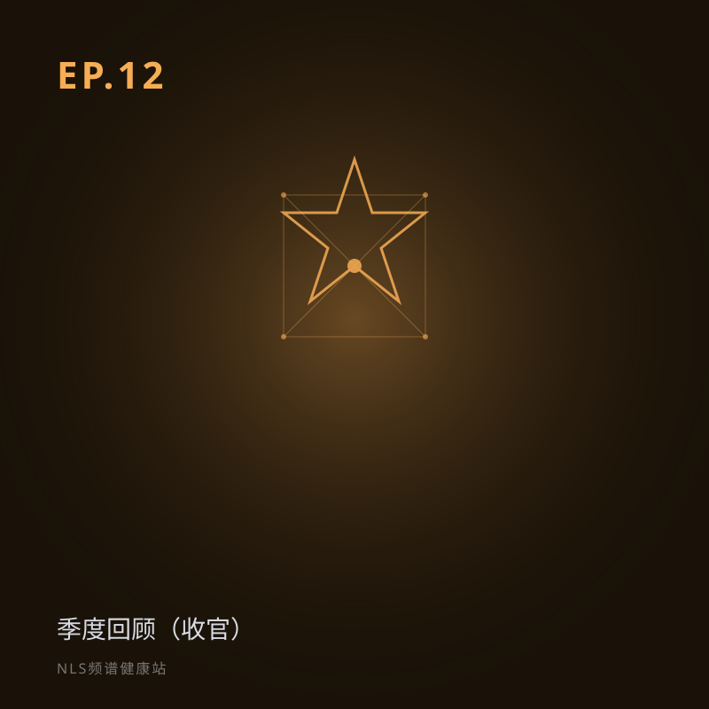

EP.12 本季季度回顾：从「什么是NLS」到「地平线」
本季收官。回到第一期那个问题——「什么是 NLS？」——咱们回头看看这 11 期走过的路。从认知建立、技术原理、应用落地，到回望来路与展望未来，11 期不是 11 个孤岛，而是 11 块拼图，拼出 NLS 的全貌。
第一季季度回顾（收官）。把 11 期串成出发、登高、远行、回望展望四阶段，重申诚实科普与补充医学定位，感谢听众陪伴。适合补听或快速建立全季地图。关键词：季度回顾、第一季收官、诚实科普、NLS全貌。
分段要点
-
00:00开场：回到起点 强化版免责；本季最后一期。
-
03:0011 期的认知之旅 出发/登高/远行/回望展望四阶段。
-
13:00季终收束 重申诚实底色；感谢陪伴；下季方向。
-
18:00结语与告别 科普不是终点，是思考的起点。
#季度回顾#收官#诚实科普#第一季#星图
本集内容仅供科普参考，不构成医疗建议。健康决策请咨询专业医生。